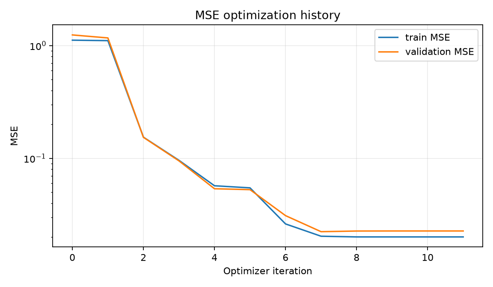
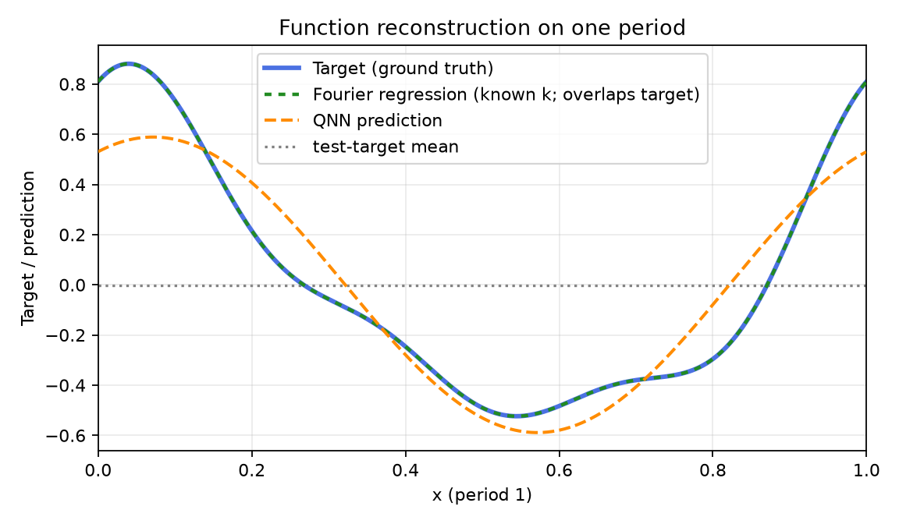
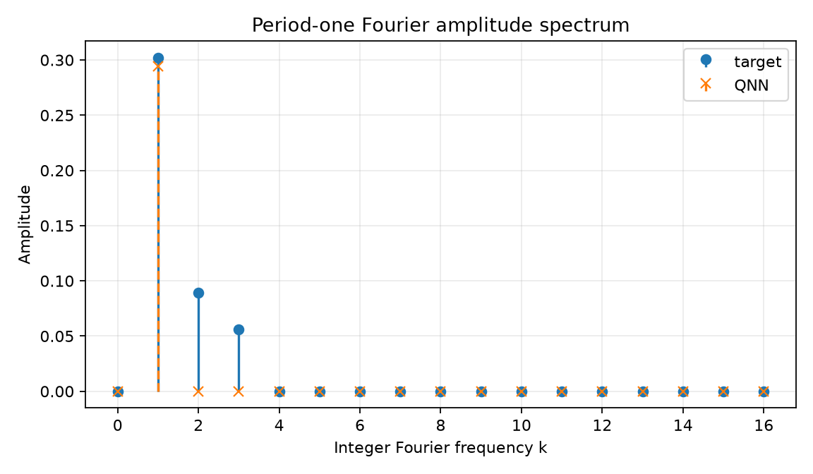
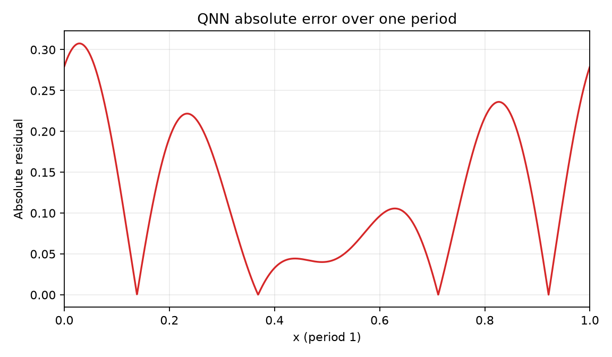
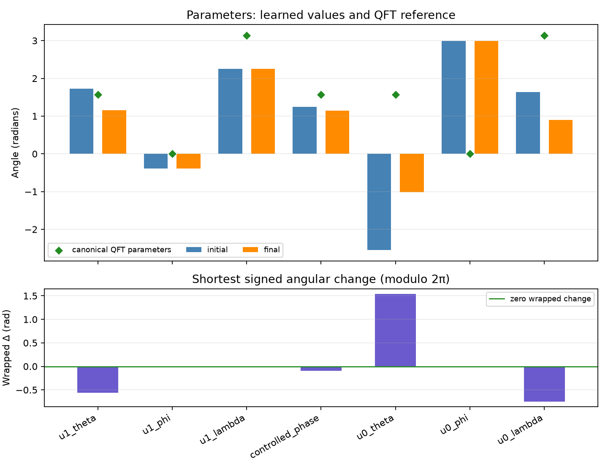

Comparison group: periodic-function-mse-k3-zero-offset-components-ry-angle-encoding-z1-readout
Training loss: MSE only; no Frobenius/process-fidelity term or PINN residual.
Encoding: RY(2πx)|0⟩ on qubit 0, x∈[0,1), period 1.
Readout: ideal Pauli-Z expectation on qubit 1.
Absolute error over one period: mean=0.123481, max=0.307597; defined pointwise as |QNN prediction − target| on the 2048-point periodic grid.
{
"run_id": "20261017T020303658643Z_periodic-function-mse-k3-zero-offset_seed-0042_fea99a4e",
"status": "FINISHED",
"comparison_group": "periodic-function-mse-k3-zero-offset-components-ry-angle-encoding-z1-readout",
"protocol_version": "0.1.0",
"objective": "training-set mean squared error only",
"loss_excludes": [
"process fidelity",
"Frobenius/unitary alignment",
"PINN/physics residual",
"frequency labels"
],
"encoding": "RY(2*pi*x)|0> on q0; x in [0,1), period 1",
"ansatz": "qft2_trainable_u_cp_u_swap",
"readout": "Pauli-Z expectation on q1",
"seed": 42,
"data_seed": 314159,
"optimizer": "L-BFGS-B",
"dataset_sizes": {
"train": 64,
"validation": 128,
"test": 512
},
"target_offset": 0.0,
"target_components": [
{
"frequency": 1,
"cosine": 0.55,
"sine": 0.25
},
{
"frequency": 2,
"cosine": 0.16,
"sine": 0.08
},
{
"frequency": 3,
"cosine": 0.1,
"sine": 0.05
}
],
"iterations": 11,
"function_evaluations": 144,
"optimizer_success": true,
"optimizer_message": "CONVERGENCE: RELATIVE REDUCTION OF F <= FACTR*EPSMCH",
"elapsed_seconds": 0.14599155099858763,
"initial_train_mse": 1.1166241694341132,
"final_train_mse": 0.02008108348101683,
"validation_mse": 0.022672837918489265,
"test": {
"mse": 0.022460884964982903,
"rmse": 0.14986955983448708,
"r2": 0.8904240456311452
},
"constant_baseline_test": {
"mse": 0.20984084994548421,
"rmse": 0.4580838896375687,
"r2": -0.023713510584981945
},
"known_frequency_fourier_baseline_test": {
"mse": 2.126123450199506e-31,
"rmse": 4.610990620462707e-16,
"r2": 1.0
},
"spectral_coefficient_mse_k0_to_16": 0.0006604349862285462,
"dense_grid_absolute_error_mae": 0.12348074355147545,
"dense_grid_absolute_error_max": 0.3075967873880261,
"target_peak_frequency": 1,
"predicted_peak_frequency": 1,
"frequency_peak_correct": true,
"qft_process_fidelity_diagnostic_only": 0.549678744079009,
"initial_qft_process_fidelity_diagnostic_only": 0.2993071074832549
}




